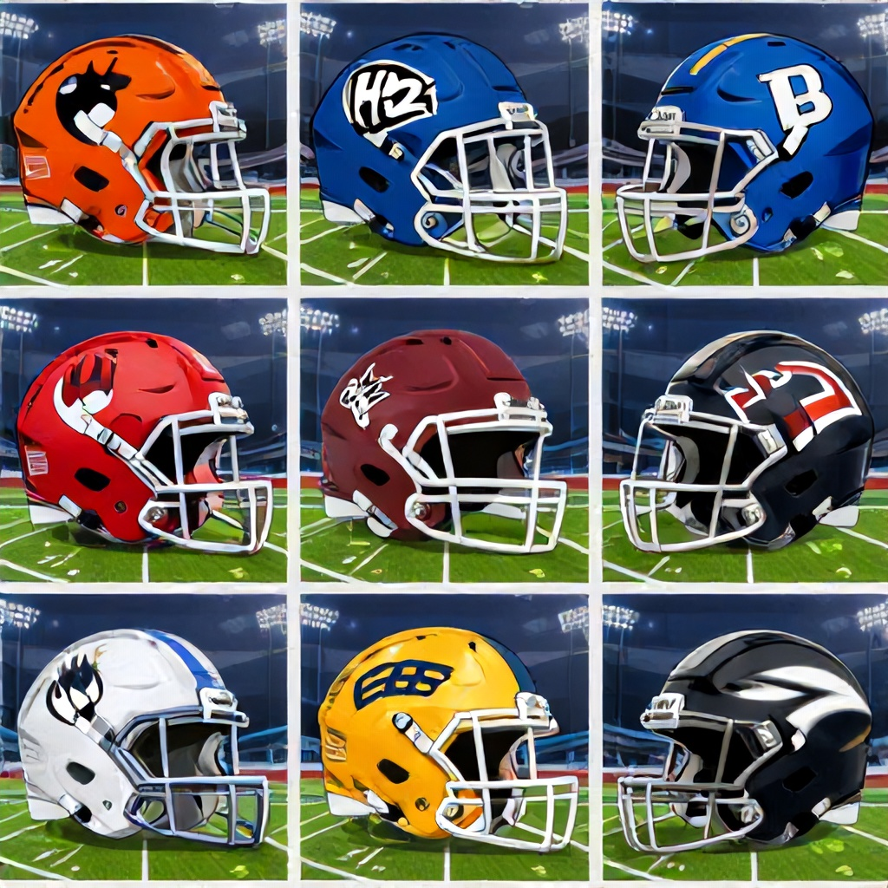

Week 2 of the CFL season opened with a Thursday-night result and closes with two more games on Friday and Saturday.
Hamilton 37, Winnipeg 27
The Hamilton Tiger-Cats opened the weekend with a 37-27 road win over the Winnipeg Blue Bombers. It was the only final on the Week 2 slate as of this writing, and it showed Hamilton can score away from home against a Western opponent.
Friday: Toronto at Montreal
The Toronto Argonauts visit the Montreal Alouettes on Friday, June 12, at 7:00 p.m. MT. Sports Select lists Montreal as a -213 moneyline favorite with a -7 spread and a 51.5 total. Montreal to cover the touchdown spread is the data-backed lean.
Saturday: BC at Saskatchewan
The BC Lions travel to Regina to face the Saskatchewan Roughriders on Saturday, June 13, at 7:00 p.m. MT. The Roughriders are slight home favorites at +110, with the spread at -2.5 and the total at 52.5. Saskatchewan on the moneyline is the pick from the odds.
Bottom Line
Hamilton already delivered an upset-style result in Winnipeg. Montreal and Saskatchewan are both favored at home in the remaining two games, and the lines point toward those clubs covering their respective spreads.